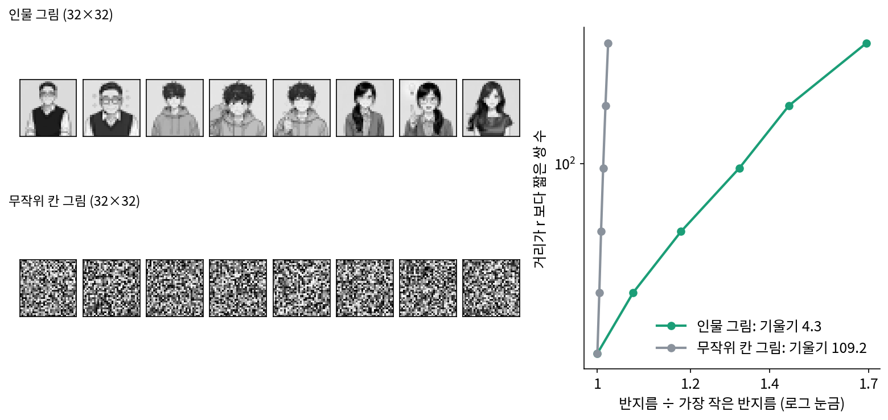
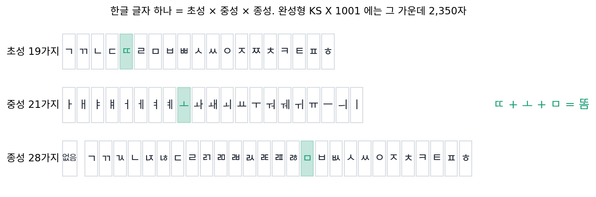
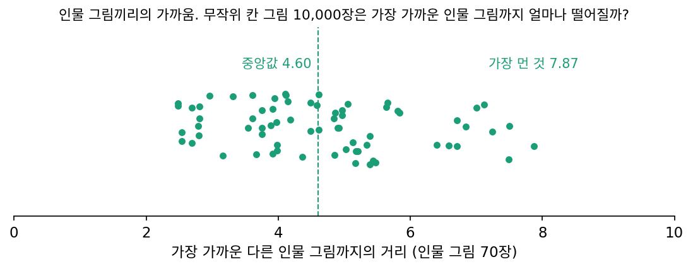
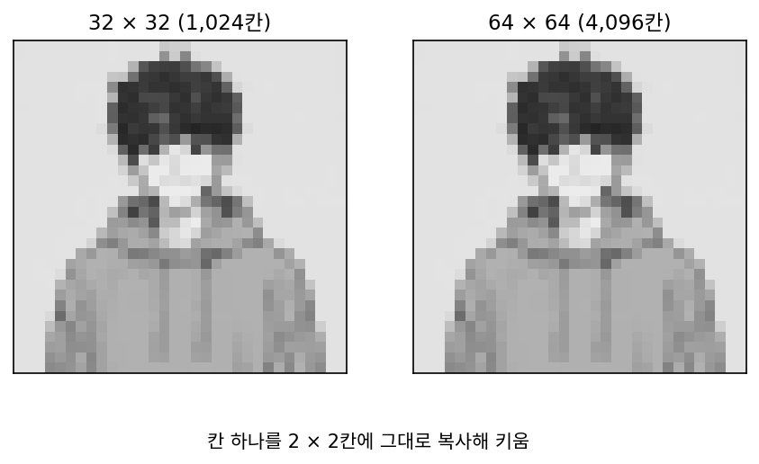

매니폴드 가설: 그럴듯한 그림은 얇은 판 위에 있다
판과 공의 차원은 쌍만 세어 가를 수 있었다. 이제 그림으로 돌아가자. 32 × 32칸 흑백 그림은 1,024칸 공간의 점 하나인데, 칸마다 숫자를 아무렇게나 뽑으면 노이즈만 나왔다. 그렇다면 사람이 「그림」이라 부를 만한 것들은 이 1,024칸 공간 어디에 있을까? 공처럼 공간을 고르게 채우고 있을까, 기운 판처럼 몇 방향으로만 퍼져 있을까?
인물 그림 70장과 무작위 칸 그림 70장
재 볼 그림으로는 이 책의 대화에 나오는 세 인물의 표정 그림 70장을 쓰기로 했다. 같은 사람이 같은 구도로 표정만 바꾼 그림이 여러 장 있어, 「그럴듯한 그림」의 작은 모음으로 알맞고, 출처를 따로 따질 필요도 없다. 그림마다 흑백으로 바꾸고 가로세로 32칸으로 줄였다(칸 값은 0~1의 밝기). 견줄 상대로는 칸마다 0~1 사이의 숫자를 고르게 뽑은 무작위 칸 그림 70장을 만들었다. 둘 다 칸 수는 1,024다.
판과 공에 쓴 방법을 그대로 쓴다. 다만 그림 사이의 거리는 3차원 점 사이의 거리보다 훨씬 커서, 반지름의 범위는 그림마다 쌍 거리 가운데 짧은 쪽 1%~10%로 잡았다(sources/low-dimension/s3_images.py). 인물 그림은 반지름을 3.71에서 6.27로 1.69배 키우는 동안 이웃 쌍이 25개에서 242개로 늘었고, 기울기는 4.3이었다. 무작위 칸 그림은 반지름을 12.46에서 12.73으로 1.02배만 키워도 이웃 쌍이 25개에서 242개로 늘었고, 기울기는 109.2였다. 가장 가까운 이웃들까지의 거리 비로 재는 방법(그림 자료의 내재 차원을 잰 포프 외가 쓴 최대우도 추정)으로도 이웃 5개 기준 인물 그림 7.5, 무작위 칸 그림 129.2로 차이가 같은 쪽으로 컸다.

점 70개로는 1,024차원을 다 잴 수 없기 때문에, 무작위 칸 그림의 109.2는 참값 1,024보다 훨씬 작다. 잰 차원에는 재는 조건(어느 반지름에서, 점 몇 개로)이 따라붙고, 점이 적을수록 높은 차원은 낮게 나온다. 그래도 같은 개수, 같은 방법으로 쟀을 때 두 모음의 차이는 스물다섯 배가 넘는다. 인물 그림 70장은 1,024칸 공간을 고르게 채우지 않고, 그 안의 몇 방향으로만 퍼진 얇은 판 근처에 모여 있다.
실제 사진 모음에서도 이런 결과가 거듭 나왔다. 그래서 그럴듯한 그림, 소리, 글 같은 자료는 칸 수가 만드는 넓은 공간을 고르게 채우지 않고, 그 안의 낮은 차원 면(매니폴드) 근처에 모여 있다고 보는 생각을 매니폴드 가설 (manifold hypothesis)이라 한다. 「가설」이라는 이름이 붙은 것은 증명된 정리가 아니기 때문이다. 자료마다 그 면이 몇 차원인지, 판처럼 하나로 이어져 있는지 여러 조각인지, 얼마나 휘어 있는지는 따로 재야 한다. 위의 인물 그림 70장도 그 면의 생김새까지 알려 주지는 않고, 알려 주는 것은 두 가지다. 그럴듯한 그림은 무작위로 뽑은 칸 그림과는 전혀 다른 곳에 모여 있다는 것, 그리고 그곳에서 따로 정해야 할 숫자는 칸 수보다 훨씬 적다는 것이다.
ML에서: 잠재 디퓨전은 왜 줄인 칸에서 도는가
Stable Diffusion 1.x는 512 × 512 컬러 사진(숫자 786,432개)을 압축기로 64 × 64 × 4(숫자 16,384개)로, 숫자 수 48분의 1로 줄인 뒤 그 안에서 노이즈를 섞고 걷어 내며 그림을 만들고, 마지막에 한 번 되살린다. 그림을 이만큼 줄여도 그림을 만드는 데 필요한 것이 남는다는 생각의 바탕에 매니폴드 가설이 있다. 사진이 실제로 따로 정해야 하는 숫자가 칸 수보다 훨씬 적다면, 칸을 줄인 공간에서도 그림들이 놓인 면을 담을 수 있다. 다만 압축기가 무엇을 버리고 무엇을 남기는지, 곧 사람 눈이 알아채지 못하는 결을 버리는 일은 내재 차원만으로 정해지지 않는다. 무엇을 버려도 되는지를 정하는 일은 이 책의 손실 압축 이야기에서 다시 만난다.
문제 7. 한글 글자는 몇 가지인가
한글 글자 하나는 초성 19가지, 중성 21가지, 종성 28가지(받침 없음 포함)를 조합해 만들 수 있어서 가능한 글자가 19 × 21 × 28 = 11,172가지다. 그런데 완성형 문자 표준 KS X 1001은 이 가운데 자주 쓰는 2,350자만 담았다. (가) 2,350자는 가능한 글자의 몇 %인가? (나) 2,350자만으로도 일상의 글을 거의 다 쓸 수 있었다는 것은 무엇을 말해 주는가?


2,350 ÷ 11,172 = 21.0%예요. 다섯 개 가운데 하나쯤만 쓰는 거네요. 나머지 79%는 왜 만들 수 있게 해 둔 거예요?

「똠」 「뷁」 같은 글자는 자주 보나요?

거의 못 봐요. 만들 수는 있는데 실제 말에는 잘 안 나오는 거네요.

조합으로 만들 수 있는 글자 공간은 넓은데, 실제 말에 쓰는 글자는 그 안의 좁은 곳에 몰려 있는 거야. 인물 그림이 1,024칸 공간의 좁은 곳에 모여 있던 거랑 같아.
칸 수가 가능한 조합을 정하고, 실제 쓰임이 그 가운데 어디에 몰리는지는 언어가 정하는 거네요. 집합론으로 치면 곱집합 안의 작은 부분집합이에요.

학번도 그래요. 여덟 자리면 1억 가지인데 실제로 있는 학번은 몇 만 개뿐이에요.
문제 8. 무작위 칸 그림은 인물 그림 근처에 떨어질까
인물 그림 70장에서 그림마다 가장 가까운 다른 인물 그림까지의 거리는 중앙값이 4.60, 가장 먼 것이 7.87이었다. 무작위 칸 그림 10,000장을 새로 뽑아, 그림마다 가장 가까운 인물 그림까지의 거리를 재면 얼마쯤 나올까? 무작위로 뽑다 보면 언젠가 인물 그림 근처에 떨어질까?

10,000장이나 뽑으면 하나쯤은 가깝게 떨어지겠죠. 돌려 볼게요… 가장 가까운 게 11.59예요. 중앙값은 12.42고요.
가장 운 좋은 한 장도 11.59야. 인물 그림끼리는 아무리 멀어도 7.87인데. 10,000장 가운데 하나도 인물 그림들 근처에 못 왔어.
뽑는 수를 백만, 1억으로 늘리면 달라질까요? 무작위 칸 그림이 어느 인물 그림과 칸마다 ±0.1 안으로 맞을 확률을 대략 계산해 볼까요?
칸 하나부터 보면, 0~1 사이에서 ±0.1 안에 들 확률이 0.2쯤이에요.
1,024칸이 다 들어야 하니까 0.2¹⁰²⁴… 계산기로 하면 10의 −715.7제곱이에요.

우주의 원자 수를 10의 80제곱쯤으로 추정하는데, 그보다도 훨씬 많이 뽑아야 하나 걸린다는 거네요.

그럼 생성 모델은 이 넓은 공간에서 그 좁은 곳을 어떻게 찾아가요? 아무렇게나 뽑으면 안 될 텐데요.

좋은 물음이에요. 무작위로 뽑아서는 영영 닿지 않으니, 그림들이 모인 곳으로 끌어당기는 방법을 따로 배워야 해요. 그 방법은 이 책의 디노이징 이야기에서 다시 만나요. 지금은 「그럴듯한 그림은 아주 좁은 곳에 있다」는 숫자만 기억해 둡시다.
도서관 서가에서 아무 책이나 펼쳐서 아무 쪽을 찍으면, 그게 제가 찾는 문장일 확률이 거의 없는 거랑 같네요. 서가 전체가 1,024칸 공간이고, 찾는 문장이 인물 그림이에요.
문제 9. 그림을 두 배로 키우면
인물 그림 70장을 칸 하나를 2 × 2칸에 그대로 복사하는 방식으로 가로세로 두 배(64 × 64, 4,096칸)로 키웠다. 잰 내재 차원은 어떻게 바뀔까? 잰 차원이 바뀌는지 아닌지는 잠재 디퓨전이 왜 칸 수를 줄여도 되는지와 어떻게 이어지는가?

칸이 네 배니까 차원도 네 배쯤 늘겠죠. 4.3이 17쯤 되지 않을까요?
키운 뒤 두 그림 사이 거리는 원래 거리의 몇 배가 될까요?
칸마다 차이가 네 번씩 들어가니까 제곱 합은 네 배, 거리는 두 배요. 돌려 보니 2.0000배로 맞아요. 어, 모든 거리가 두 배면… 잰 차원은 4.30 그대로예요. 최대우도로도 7.47 그대로고요.
기울기는 거리의 비율만 보니까, 거리를 모두 같은 배수로 늘리면 바뀌지 않아. 칸은 네 배가 됐지만 새로 생긴 방향이 없는 거야. 늘어난 칸은 옆 칸을 복사한 거라 새로 정할 숫자가 없잖아.
그래요. 포프 외도 내재 차원을 고정한 그림을 가장 가까운 칸을 복사하는 방식으로 크게 키워 칸 수만 늘렸더니, 배우는 데 필요한 예제 수가 거의 달라지지 않았어요. 거꾸로 생각해 보면요?
칸을 줄여도 그림들이 퍼진 방향을 잃지만 않으면 내재 차원은 그대로라는 거죠.
Stable Diffusion은 숫자를 48분의 1로 줄여요. 그래도 그 방향들이 다 들어갈까요?
48분의 1로 줄여도 16,384개나 남아요. ImageNet 내재 차원은 수십이었고요.

그럼 줄인 공간도 그 면을 담기에는 아직 넓네요.
과제 보고서를 글자 크기만 키워서 열 쪽으로 늘려도 내용은 그대로인 거랑 같네요. 쪽수가 칸 수고요.